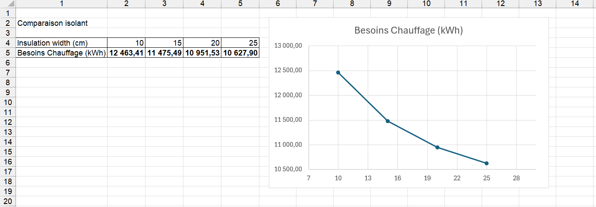

Quelle épaisseur d'isolation choisir ? Quel U global atteindre ?
Ta volumétrie et tes principes constructifs sont définis. Tu dois maintenant arbitrer l'épaisseur d'isolant de tes parois. Tu veux éviter deux écueils : un mur sous-isolé qui laisse filer la chaleur, et un mur surdimensionné dont l'épaisseur devient absurde.
Pourquoi cette question compte
L'isolation est le principal levier de réduction des besoins de chauffage. Mais la relation entre épaisseur d'isolant et performance n'est pas linéaire : les premiers centimètres apportent un gain énorme, les suivants un gain de plus en plus faible. Passé un certain point, ajouter de l'isolant coûte de l'argent, de l'épaisseur de mur et du carbone incorporé pour un bénéfice marginal.
L'objectif est de trouver le point d'équilibre : l'épaisseur au-delà de laquelle continuer à isoler n'a plus de sens. C'est typiquement une question qui se traite par comparaison de variantes.
Outil recommandé
Pléiades
Pléiades permet de tester plusieurs compositions de parois et de chiffrer, pour chacune, les besoins de chauffage du bâtiment. En traçant la courbe épaisseur d'isolant / besoin de chauffage, on visualise directement le point de rendement décroissant.
Voir la fiche Pléiades →Pour un calcul rapide du coefficient U d'une paroi seule, sans simulation du bâtiment complet, Ubakus est plus direct.
Faire le test : comparer 4 épaisseurs d'isolant sur la Smart House
L'exemple ci-dessous a été réalisé sur un modèle Pléiades de la Smart House du G2Elab, en ne faisant varier que l'épaisseur du polystyrène expansé entre 10 et 25 cm.
Étape 1 — Modéliser la géométrie
On commence par construire le modèle géométrique du bâtiment dans Pléiades, en respectant les niveaux (RDC, 1er étage, combles) et les volumes habitables.

Étape 2 — Définir la composition de référence du mur
Dans la bibliothèque, on définit le mur extérieur de référence. Ici, paroi « Béton plein + LV » composée d'enduit extérieur (1,5 cm) + béton lourd (20 cm) + polystyrène expansé (10 cm) + placoplâtre BA13 (1,3 cm).

Étape 3 — Créer les variantes
On duplique le modèle Pléiades pour chaque variante d'épaisseur d'isolant à tester : 10 cm (base), 15 cm, 20 cm, 25 cm. Seule l'épaisseur du polystyrène change d'un fichier à l'autre — tout le reste (géométrie, autres parois, scénarios, météo) est strictement identique.

Étape 4 — Lancer les simulations et exporter les résultats
Pour chaque variante, on lance le calcul des besoins (Calcul → Calcul des besoins), puis on exporte les résultats vers Excel pour consolidation.

Étape 5 — Tracer la courbe épaisseur / besoin de chauffage
On regroupe les 4 résultats dans un même tableau et on trace la courbe.

| Épaisseur isolant | Besoin chauffage | Gain vs précédent |
|---|---|---|
| 10 cm | 12 463 kWh | — |
| 15 cm | 11 475 kWh | −988 kWh |
| 20 cm | 10 952 kWh | −524 kWh |
| 25 cm | 10 628 kWh | −324 kWh |
Comment lire le résultat
La courbe a une forme caractéristique en décroissante qui s'aplatit. Les premiers centimètres font chuter fortement les besoins (passer de 10 à 15 cm économise environ 1 000 kWh par an sur ce modèle), puis chaque centimètre supplémentaire apporte de moins en moins (entre 20 et 25 cm, on ne gagne plus que 324 kWh).
Le bon choix se situe juste avant cet aplatissement : c'est l'épaisseur qui capture l'essentiel du gain thermique sans surdimensionner. Sur cet exemple, le passage de 15 à 20 cm reste rentable thermiquement, mais au-delà l'arbitrage doit intégrer d'autres critères : coût, carbone incorporé, épaisseur disponible, exigences réglementaires.
Le coefficient U global de la paroi (en W/m²·K) traduit la même information : plus il est bas, plus la paroi est isolante. La RE2020 fixe des exigences sur le Ubât global du bâtiment.
Le bon réflexe
Le bon réflexe n'est pas de chercher directement « la bonne épaisseur », mais de comparer plusieurs variantes. Le choix pertinent est généralement celui qui permet de capter l'essentiel du gain thermique avant que la courbe des besoins de chauffage ne s'aplatisse. Au-delà, l'isolant supplémentaire apporte peu de bénéfice énergétique et doit être justifié par d'autres critères : coût, carbone, confort ou réglementation.
Limites de cette approche
- Le test isole l'épaisseur d'isolant ; le choix réel intègre aussi le coût, le carbone incorporé de l'isolant, et l'épaisseur de mur disponible.
- Un isolant biosourcé et un isolant minéral à épaisseur égale n'ont pas le même impact carbone — voir la question carbone.
- Les résultats dépendent de la qualité du reste du modèle (ponts thermiques, étanchéité à l'air, scénarios d'occupation).
- Sur l'exemple Smart House : le bâtiment n'a pas pu être calibré sur ses mesures réelles (données géométriques incomplètes dans le dataset). Les chiffres absolus sont donc indicatifs ; la forme de la courbe et la démarche comparative restent valides.
Alternatives
- Ubakus — calcul du U d'une paroi seule, très rapide, sans simuler tout le bâtiment.
- OpenStudio / EnergyPlus — équivalent open source pour la simulation complète.
Pour aller plus loin
- Documentation Pléiades — compositions de parois
- Méthode RE2020 — exigences sur le Ubât
- ADEME — choisir son isolation